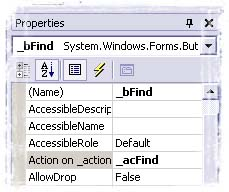

Title: Article Title Goes Here
Author: Author Name
Email: author@email.com
Environment: VC++ 5.0-6.0, NT 4.0, Win95/98
Keywords: Control, Dialog, MFC
Level: Intermediate"
Description: An article on something-or-other
Section .Net
SubSection General
ActionLists for Windows.Forms
Introduction
The .Net framework is really a nice framework, but as a programmer coming from the MFC world, I really miss some features like the
ON_COMMAND/ON_UPDATE_COMMAND_UI mechanism.
This mechanism allows the decoupling of the UI and the code associated to it. It allows:
- to automatically share the code between menus, toolbars, buttons and other controls.
- to reduce the amount of code needed for updating the UI.
- to enable/disable controls according to conditions not related to the UI (for example a connection to a database).
Unfortunately, the ON_COMMAND/ON_UPDATE_COMMAND_UI mechanism is a message base
mechanism which strongly relies on a specific message routing architecture. This mechanism can be reproduced in the .Net environment but it is far from being a
pratical solution in a RAD environment. A nice alternative is the ActionList component provided by Delphi.
An ActionList is a collection of Actions. Each Action is itself a component associated to a given task.
An Action provides the framework for:
- excuting the task in response to an UI event.
- enabling/disabling, checking/unchecking the controls related to the task according to some conditions.
Furthermore, this mechanism can be extended in order to:
- set the text of the controls.
- set the help text of the controls.
- show/hide the controls.
- set the icons associated to the controls.
- set the shortcut associated to the task.
Adding actions to your project
This a simple example based on the Find Dialog of the demo application. We will add an action wich will be associated to the Find button.
- Open your dialog in Design Mode.
- Add the components of the
CDiese library to the Toolbox.

- Drag an
ActionList on the dialog
- Edit the property
Actions of the new ActionList. Add a new Action and set its properties.

- Select the action in the component editor and add an
EventHandler for the Execute and Update events.
private void OnUpdateFind(object sender, System.EventArgs e)
{
((CDiese.Actions.Action)sender).Enabled = _text.TextLength > 0;
}
private void OnFind(object sender, System.EventArgs e)
{
RichTextBoxFinds mode = RichTextBoxFinds.None;
if (_bCase.Checked)
{
mode |= RichTextBoxFinds.MatchCase;
}
....
_RTF.Select(sel, _text.Text.Length);
_RTF.ScrollToCaret();
}
- Associate the action to the Find button

Latest updates
Serge  .
.